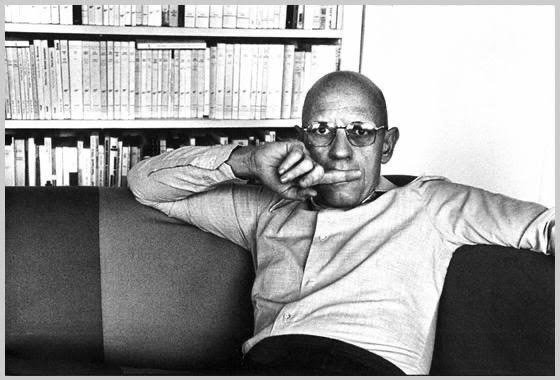
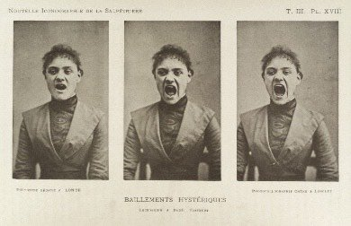

ميشيل فوكو (1926-1984)
«سآخذ هذه الساقطة إلى الجامعة
سألقِّن هذه الساقطة بعض المعرفة
سوف أقرأ، سوف أقرأ، سوف أقرأ، سوف أقرأ، سوف أقرأ تلك الساقطة»
أغنية «سوف أقرأ» (2013) لأوجاي مورجن المعروف بـ«زيبرا كاتز»
في أغنيته «سوف أقرأ» يشير مغني الراب الأمريكي أوجاي مورجن إلى ظاهرة معينة، نشأت منذ نهاية السبعينات، وسط مجتمعات المثليين الملونين من السود واللاتين في الولايات المتحدة الأمريكية، وعرفت بـ «القراءة»، كجزء من تشكّل ثقافة مضادة، في ظل تمييز عنصري ضد المثليين الملونين، مادفعهم لتطوير لغة خاصة للتعبير عن أنفسهم، لتحدي سيادة الثقافة الغيرية البيضاء. و«القراءة» هنا تعني مبارزة لغوية بين اثنين، يتباهى كل منهما بفراسته في كشف مواطن ضعف الآخر، وحصافة منطقه في تحديد هذه العيوب، وبلاغة أسلوبه في وصفها وذمها، وكشف حقيقتها.
تشبه هذه الظاهرة شكليًا الأسلوب الشعري العربي المعروف بـ «الهجاء»، لكن في الواقع، فإن جوانبها المتعلقة بـالأداء أو الإلقاء هي أهم ما يميزها، فبالإضافة إلى أن مباريات القراءة تلك كانت تحدث بين الدراج كوينز أو drag queens، فهي مثقلة بإحالات للرموز والمراجع الثقافية المتواترة في مجتمعات المثليين السود، كأفلام هوليوود الكلاسيكية أو لغة الوعظ الخاصة بالكنيسة السوداء.
ظلّت أغنية «سوف أقرأ» تتردد في مخيّلتي وأنا أقرأ كتاب «إرادة المعرفة»، وهو الجزء الأول من ثلاثية «تاريخ الجنسانية» للمفكر الفرنسي ميشيل فوكو، فبالإضافة لإشارتها لفعل القراءة الذي أمارسه، ولتماسها مع أفكار الجنسانية موضوع الكتاب، فقد وجدتُ أن من الممكن مقاربة أطروحات فوكو، في ضوء كونها مباراة «قراءة» شرسة بينه وبين معاصريه من المؤرخين والماركسيين آنذاك.
في هذا الكتاب، انشغل فوكو بمبارزة الماركسيين الجدد ومدرسة فرانكفورت، وتفكيك الصرح النظري الذي شيدوه في محاولتهم فهم المجتمع الغربي في ظل التغيرات السياسية والاجتماعية الهائلة التي مرّ بها، منذ نهاية الحرب العالمية الأولى والثانية.
فلأن فوكو لم يقتنع بمقاربتهم لمفهوم الجنسانية، أخذ على عاتقه تقديم «قراءة» جديدة للمفهوم. وبأسلوب تميز بالتراكيب اللغوية المعقدة، ونبرة محملة بكثير من السخرية والاستهزاء، قدم طرحه المختلف، متجاوزًا به الرؤية الماركسية، التي اقتصرت على التركيز على المفهوم في طوره البرجوازي الحداثي.
بين المقاربة الماركسية ومقاربة فوكو لمفهوم الجنسانية: نقطة الانطلاق
«سوف تكون مترابطة
سوف تكون أطروحتي
'أني سوف أقرأ»
أولى نواحي الخلاف بين المقاربة الماركسية ومقاربة فوكو، هي كونهما تنطلقان من نقطتين مختلفتين زمنيًا. تنطلق المقاربة الماركسية من لحظة أفول مرحلة الإقطاع في أوروبا، في القرن السادس عشر، ومولد الطبقة البورجوازية الجديدة الناتجة عن الرضوخ لمتطلبات اقتصاد الرأسمالية، وما ارتبط به من شكل تصنيع كثيف العمالة، أدى إلى دمج الفلاحين كفئة عاملة، وتحولهم إلى قوة عمل من نوع جديد، غير مرتبطة بالأرض الزراعية ولا بسيطرة الأمراء والإقطاعيين.
ويرى الطرح الماركسي أن استتباب الأمر للبورجوازية الجديدة مع منتصف القرن التاسع عشر، أدى إلى سيادة رؤيتها الأخلاقية المحافظة عن الجنس، وفرضها على سائر المجتمع، فيما عرف بعد ذلك بـ«التحفظ الفيكتوري»، نسبة إلى عهد الملكة فيكتوريا.
شهدت هذه الحقبة الزمنية بدايات الطب النفسي، وما تمخض عنه من تصنيف الاضطرابات النفسية، إلى «كتالوجات»، لا تزال مستمرة حتى الآن، ولو اختلفت بعض الشيء، وكذلك شهدت محاولات تشريح وتدوين الجنسانية، وظهور ما أسماه فوكو بـ «علم الجنس».
بالتالي، ولأنه جرت معالجة الأفكار من خلال إخضاع المعلومات للترتيب والتصنيف، فلم تعد آليات السلطة سوى محاولة دائمة لعقلنة التسلط، ولم تعد الجنسانية سوى امتداد لتلك المحاولات الحثيثة لفهم ماهية ذواتنا أو كما قال فوكو، «حقيقة ذواتنا».
فوكو ضد افتراض الشكل المركزي للقوة
غير نقطة الانطلاق، كان معول الهدم الأكثر ضراوة في يد فوكو، والذي شقَّ به ثغرات في النظرية الماركسية، هو تحليله النقدي للتعريف أحادي البعد لمفهوم «القوة» عند الماركسيين، والذي كان الأساس الذي بنوا عليه مقاربتهم لتاريخ الجنسانية، والذي قادهم لافتراض أن ما حدث، منذ نهاية القرن السابع عشر، هو قمع للجسد أو الجنسانية، وهي الفكرة التي رفضها فوكو، والتي دفعته للاشتباك مع مفهوم القوة، وتحليل آلياته، من أجل تفنيدها.
فبينما يتفق فوكو مع الطرح الماركسي، بشأن تفضيل الرأسمالية لشكل «الأسرة» كوحدة للمجتمع، لكونها الأسهل في فرض السيطرة، والأكثر طواعية للتدجين وتحويل أفرادها من عمالة إلى مستهلكين، فإنه يختلف معهم، في تقدير توابع ذلك، من حيثُ افتراضهم أن هذا الشكل أدى إلى تصاعد القمع.
يرى فوكو أن فرضية القمع غير مفسِّرة بشكل كافٍ، بسبب افتراضها وجود شكل مركزي ومادي للقوة، يتمثل إما في التشريع والقانون ليظهر في شكل إجراءات المنع والتجريم، وإما في شكل سلطة فوقية متمثلة في شخص الملك أو الأمير، وتُملي قراراتها من أعلى إلى أسفل. تنتقد رؤية فوكو أحادية هذا التفسير، وتقترح العكس، أن القوة تتخذ أشكالًا متغيرة ومتحركة، غير ذاتية ولا مركزية، رغم كونها غائية.
آليات القوة: آلية التحالف
يرى فوكو أنه من أجل فهم آليات تلك القوة علينا قطع رأس الملك أو الأمير، وتجاوز تمظهراتها القانونية. ويرى أنها بالأحرى تتجلّي عن طريق تفاعل عدد من الاستراتيجيات أو الأدوات في شتى المناحي والجوانب بهدف إنتاج «خطاب»، ليصبح تاريخ الظاهرة (الجنسانية في هذه الحالة) هو تاريخ الخطاب.
فـ «القوة» عند فوكو ليست مجرد عامل سلبي، مانع، ينفي وجود الشيء أو يحد من مساراته، بل على العكس قد تكون إيجابية ومنتجة بتمركزها على عدد من العلاقات، فتتكثف اللغة أو مصطلحاتها حول تجليات هذه القوة. على سبيل المثال، مفهوم محاسبة النفس الذي فرضته الكنيسة، من خلال آليات الاعتراف، وما ترتب عليه من تكثيف لخطاب الجسد والخطيئة منذ نهايات القرن الرابع عشر.
بهذا لا يحاول فوكو خلق نظرية لمفهوم «القوة» كما فعل الماركسيون أو المؤرخون الكلاسيكيون، ولكنه يطرح، عوضًا عن ذلك، «تحليلات» لعلاقاتها. في هذا الصدد، يرى فوكو أن القوة تعمل من خلال آليتين، هما آلية التحالف وآلية الجنسانية.
بآلية التحالف، يقصد فوكو النظام الأبوي؛ الذي يؤمّن لنفسه الاستمرارية من خلال مجموعة تحالفات تتم من خلال الزواج، الذي عن طريقه تنتقل الملكية والنسب والحقوق باتفاقيات مسبقة، وهي الآلية التي كانت سائدة في القرون الوسطى في أوروبا.
في هذه الحقبة، لم تر السلطة المجتمع إلا كامتداد لجسد الملك/الحاكم الذي يحق له منح الحياة أو نزعها، مثل القانون الروماني الذي يعطي الأب الحق بقتل أبنائه وعبيده لأنه هو من منحهم حق الحياة من الأساس. هذا بالإضافة لحق الحاكم استخدام «الحياة» للحفاظ أو الدفاع عن ذلك الجسد/السلطة عن طريق نزع حيوات الآخرين.
ومع التحول من الإقطاع وصعود طبقة بورجوازية جديدة، استمرت آلية التحالف، لتعيد صياغة مفهوم النسب والدم، ويتحول من اقترانه بالسلطة والصلاحيات التي يتوارثها النبلاء في العصور الوسطى، لاقترانه بالعائلة التي ستصبح مستودعًا للجنسانية، ولترتبط قيمة الفرد وأهليته بالجسد، أو بالجنس بمعنى أدق، وهو ما يؤدي إلى «تكثيف فكرة الجسد».
آلية الجنسانية: وكيف يحدث تكثيف لفكرة الجسد
« كقربان على المذبح سوف أجعلها تنزف تلك الساقطة
يا رئيس الفصل، سوف أقتاد تلك الساقطة
سوف أقتادها للخارج، أنا لا أحتاج تلك الساقطة
سوف أقرأ»
تتم عملية التكثيف هذه، من خلال عدد من التقنيات يرى فوكو أنها كان لها أكبر الأثر في تحقيق التعريف الحديث للجنسانية كما نفهمها الآن. ويسميها فوكو « تقنيات القوة»، وهو مصطلح يشي بقدر لا بأس به من تأثير مارتن هايدجر على فوكو.
ورغم أنه لا يُعرَّف « تقنيات القوة» تحديدًا، إلا أنه يمكن أن نفترض، طبقًا لما طوره هايدجر حول ذلك المصطلح، أنه يقصد بها التوجهات أو الأطر العقلانية، التي تمكِّن الفرد من مضاعفة وترسيخ هيمنته على الطبيعة بشكل آلي، وبالتتابع هيمنته على الآخرين. وهذه الآلية تصبح غائية في حد ذاتها.
مع بدايات القرن السابع عشر، تجلّت هذه التقنيات، في ثلاثة مظاهر رئيسية، مرتبطة بأفكار التنوير، وتتلخص أولًا في نشوء الطب النفسي، وما نتج عنه من محاولات عنونة الاضطرابات النفسية/ الجنسية، بالإضافة لتطوّر مفهوم الهيستريا بوصفه مدخلًا لفهم جنسانية المرأة. ثانيًا: ظهور فكرة المناهج التعليمية الحديثة، وما ارتبط بها من نمو حالة الهلع حول موضوع جنسانية الأطفال وكيفية التحكم فيها. وثالثًا: تمازج الاقتصاد مع دراسات السكان (علم الديموجرافيا)، وما تبعه من تطور سياسات السكان والإنجاب، والاجراءات التي اتخذتها الدولة في التحكم في تعداد سكانها وتوزيعهم الحضري–الريفي.

من لوحات جون مارتن شاركوت عن الهيستيريا - المصدر: www.theeyeoffaith.com
بانتقال موضع البحث والتكثيف من بقاء سلطة الملك والحفاظ عليها إلى فكرة الأسرة كنواة للمجتمع الصناعي-الرأسمالي، تطوَّر مستوى آخر من القوى وهو السلطة-الحيواتية. ويعني ذلك أن حياة الأفراد في حد ذاتها أصبحت مشروعًا سياسيًا، وتصبح «إدارة» حيوات هؤلاء الأفراد، من تعليم وتأهيل صحي وبدني، وحصر وتعداد وتأهيل فني وعملي وتشغيل وتوظيف، هي علة وجود السلطة، كما يصبح نزع حيواتهم هو نزع لأساس تلك السلطة وموضوعها بشكل يخالف آليات الضبط والعقاب السابقة.
وفي ذلك المستوى تشمل أدوات الضبط بالتبعية مؤسسات تمارس فيها السلطة تلك الآليات، مثل المصحات النفسية والعقلية، المدارس، المصانع، المؤسسات العقابية وما إلى ذلك. وبالتالي تصبح حياة الأفراد بكل جوانبها خاضعة بشكل كامل لآليات الضبط هذه بكل تنويعاتها.
يختم فوكو هذا الجزء من تاريخ الجنسانية، بالقول إن الجنسانية، بمفهومها الحداثي، ليست نتاجًا لقمع أو لمنع أو تجريم، بل بالعكس هي موضوع وهدف آليات السلطة، بسبب تفشيها وإصرارها على الدخول في جنبات وأنحاء استعصت على السلطة لمدة طويلة من الزمن، وأصبح حصرها وعنونتها ومأسستها هو موضوع السلطة الحيواتية وهدفها في «كشف» حقيقة ذوات من هم تحت سلطتها، لإدارة تلك العلاقة مما يضمن استمرارية تلك السلطة.
«قرأ» فوكو .. والآن علينا نحن إعادة «قراءته»
ورغم أهمية ما توصل إليه فوكو في تحليل القوة وآلياتها، إلا أن علينا أن «نقرأه» بجدية، تمكننا من مبارزته بدورنا، كما بارز هو معاصريه. وعلى حد تعبير مغنى الراب الأمريكي زيبرا كاتز، علينا، أن نأخذه إلى الجامعة، ونلقنه بعض المعرفة.
من أبرز المآخذ على نص فوكو، عدم استخدامه لمصطلح النظام الأبوي بشكل مباشر، ولو مرة واحدة، في دراسته التحليلية، بالإضافة لعدم إعطائه ثقلًا للجانب النوعي، وتأثيره غير المتكافئ على النساء وأجسادهن. فنجده مثلًا يستشهد بدراسات الطبيب الفرنسي شاركوت (1825-1893)، على النساء في حالات الهيستريا وعلى الأعضاء التناسلية، بغض النظر عما حاول شاركوت فعله من طمس قيمة اللذة والمتعة من تلك التجارب.
كما نجده أيضًا يستشهد بقصة الكاتب والمفكر الفرنسي ديديروت (1713-1784)، «الجواهر التي تفشي الأسرار» (1748)، بوصفها مثالًا على الرغبة الملحة في معرفة أسرار أجساد النساء ورغباتهن، دون الإشارة إلى أن ذلك الهوس ما هو إلا امتداد للتحكم في أجسادهن، وترسيخ فكرة جنسانية المرأة كقوة مُفسِدة أو مخرِّبة.
وأثناء نقاشي مع الباحث أحمد همام حول نص فوكو، أشار إلى مأخذ آخر، وهو تغافله عن الاستعمار كآلية أثرت على المستعمِر والمستعمَر، بما يجعله الحاضر الغائب في كتابه، كذلك يدفعنا هذا لإعادة النظر في إمكانية قراءة فوكو في سياق آخر بنفس التسلسل الزمني الذي اتبعه حتى لو تراجع عن خطته الأصلية في الجزء الثاني والثالث من تاريخ الجنسانية.
فحين استشهد فوكو بقصة ديديروت، وكيف أن ملك الكونغو مونجول هو من طلب من الجني الإتيان بخاتم يكشف أسرار «جواهر» (في تلميح جنسي واضح) النساء، لم يتعرض للبعد العنصري من القصة، ولم يشر لفكرة أهمية إسقاط الهوس بالجنس كحقيقة على الآخر الغريب، أو أهمية الاستعمار في حد ذاته كمحرك للمعرفة ومأسستها، في التاريخ الفرنسي ذاته، الحملة الفرنسية على مصر مثلًا وما تبع ذلك من تولي أهم علماء الحملة المناصب الأساسية في شتى المجالات والمؤسسات العلمية في فرنسا بعد رجوعهم من الحملة.
ويبقى السؤال: هل يمكن استخدام فرضية فوكو، في القيام بتحليل لتاريخ الجنسانية في الدول العربية؟ أو بمعنى آخر هل تستطيع فرضية فوكو كشف بعض جوانب التناقض والعبث فيما يخص ذواتنا وجنسانيتنا؟ ربما. لكن يبقى علينا أن نقرأ، نقرأ، نقرأ فوكو ونأخذه إلى الجامعة ونعلمه ونعلم أنفسنا بعض المعرفة، نحن في أمس الحاجة إليها في هذا الوقت بالذات.
الهوامش
[1] كان مفترضًا أن تتبَع السلسلة بأجزاءٍ أخرى، ولكن القدر لم يمهل فوكو وتوفّى في 1984.
[2] ذلك المصطلح الماركسي الذي أعاد فوكو بدوره تشكيله.
[3] كما في الدليل التشخيصي الإحصائي للاضطرابات العقلية الذي تصدره الجمعية الأمريكية للأطباء النفسيين، منذ عام 1952.
[4] والذي قارنه بعد ذلك بفن الايروسية مصطلح آخر مبهم لم يشرحه فوكو بشكل كافي عن أفكار الثقافات الغير غربية عن الجنس.
[5] فرغم أن موضوع بحثه الأساسي هو الجنسانية؛ إلا أن تحليله لمفهوم «القوة» في الفصلين الأول والثاني من الجزء الرابع بالإضافة للجزء الخامس؛ ليس فقط من أهم إنجازاته في الاشتباك مع هذا المفهوم بشكل عام، لكنه أيضًايعتبر تتويجًا لمشروعه البحثي الطويل الذي بدأه بنشر رسالة الدكتوارة الخاصة به «تاريخ الجنون» عام1961.
[6] فيما وصفه هربرت ماركوزيه في كتاباته بالرأسمالية المتأخرة.
[7] التي طورها معاصروه من المؤرخين والماركسيين، و بعض رواد مدرسة التحليل النفسي كفرويد ولاكان.
[8] أخذ فوكو العشرات من الصفحات في شرح تلك الفرضية،لا لسبب غير رفضها في آخر الأمر.
[9] هو أقرب وصف ذهب إليه فوكو لتصور شبه-ميتافيزيقي للقوة.
[10] بالفرنسية وتعني آلية و أداة dispositif.
[11] سواء بشكلها الكاثوليكي أو حتى ما يوازيها من تطورات في الفكر البروتستانتي من مفهوم محاسبة النفس
[12] وهو مصطلح استعاره فوكو من كتابات كلود ليفي-سترواس، على أغلب الظن، خاصة «البنى الأولية للقرابة»1949 ولكن دون الإشارة إليه.
[13] لا يستخدم فوكو مصطلح النظام الأبوي مباشرة ولعل هذا من أكبر مثالب النص.
[14] في إشارة واضحة لكتابات وأفكار توماس هوبز.
[15] لفظ جنس بالفرنسية، sexe ، يعني الأعضاء الجنسية ويعني أيضا النوع ويستخدمه فوكو بكلا المعنين.
[16] تأثير تنكر له فوكو ولكن يظهر بشكل غير مباشر في الجزء الأول من تاريخ الجنسانية وبشكل أكثر وضوحا في الجزء الثاني حينما يشير فوكو إلى هوبرت درايفوس -أهم من شرح هايدجر في الأكاديميا الأمريكية- في مقدمة الجزء الثاني كواحد ممن أثروا في مسار البحث.
[17] من الجزىء «بايو» بالإغريقية ويعني حي أو حياة.
[18] ويأتي هذا كنتاج لبحث فوكو المطول عن الضبط والعقاب الذي نشره في 1975 ومحاضراته التي ألقاها في «الكوليدج دوفرانس» ونشرت بعد ذلك بعنوان «المجتمع يجب الدفاع عنه»1976.